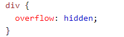

<div class="main-content">
  <div class="container-fluid">
    <div class="card">
        <div class="card-header card-header-danger">
            <h4 class="card-title">CSS OverFlow</h4>
            
        </div>
        <div class="card-body">
          
          <mat-tab-group>
            <mat-tab label="Info"> 
              <br>
              <br>
            <p>The CSS overflow property controls what happens to content that is too big to fit into an area.</p>
<p>The overflow property specifies whether to clip the content or to add scrollbars when the content of an element is too big to fit in the specified area.</p>
            
            </mat-tab>
            <mat-tab label="Output"> 
         
         
              <mat-grid-list cols="4" rowHeight="2:1">
                <mat-grid-tile>
                  <button mat-raised-button (click)="vis()">Visible</button>
                </mat-grid-tile>
                <mat-grid-tile>
              <button mat-raised-button (click)="hide()">Hidden</button>
              </mat-grid-tile>
              <mat-grid-tile>
              <button mat-raised-button (click)="scroll()">Scroll</button>
            </mat-grid-tile>
           
            <mat-grid-tile>
              <button mat-raised-button (click)="auto()">Auto</button>
            </mat-grid-tile>
          </mat-grid-list>
        <div *ngIf=visible>
          <p>By default, the overflow is visible, meaning that it is not clipped and it renders outside the element's box:</p>

<div class="visible">You can use the overflow property when you want to have better control of the layout. The overflow property specifies what happens if content overflows an element's box.</div>

        </div>
          <div *ngIf=hidden>
            <p>With the hidden value, the overflow is clipped, and the rest of the content is hidden:</p>
<p>Try to remove the overflow property to understand how it works.</p>

<div class="hidden">You can use the overflow property when you want to have better control of the layout. The overflow property specifies what happens if content overflows an element's box.</div>

          </div>
          <div *ngIf="scroller">
            <p>Setting the overflow value to scroll, the overflow is clipped and a scrollbar is added to scroll inside the box. Note that this will add a scrollbar both horizontally and vertically (even if you do not need it):</p>

<div class="scroller">You can use the overflow property when you want to have better control of the layout. The overflow property specifies what happens if content overflows an element's box.</div>
          </div>
          <div *ngIf="autoo">
            <p>The auto value is similar to scroll, only it add scrollbars when necessary:</p>

<div class="autoo">You can use the overflow property when you want to have better control of the layout. The overflow property specifies what happens if content overflows an element's box.</div>
          </div>
            </mat-tab>
            <mat-tab label="Code"> 
              <br>
              <br>
              
               </mat-tab>
           
          </mat-tab-group>     
         
                  
                   </div>
                   </div>
                   </div>
                   </div>
                   